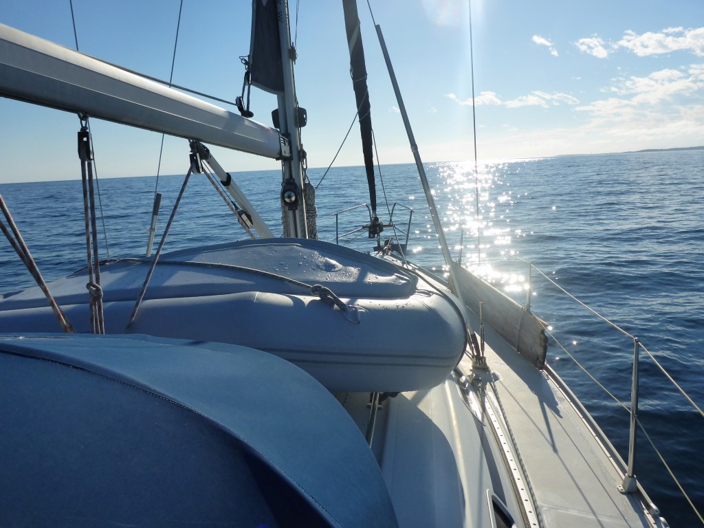
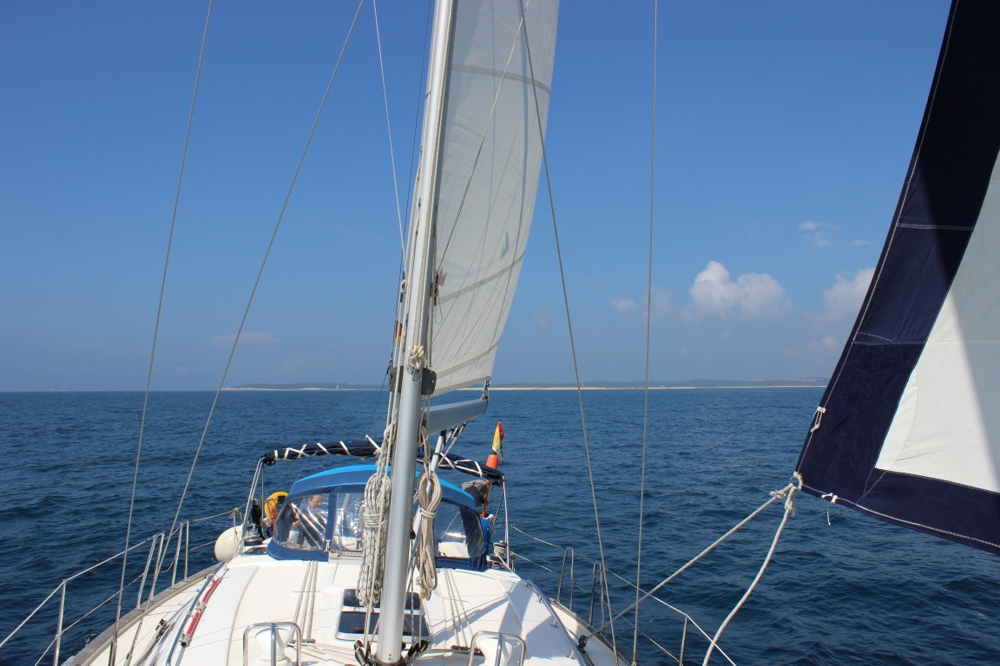

Wollen Sie leises Rauschen der Wellen um den Bug einer Segelyacht erleben, in die geblähten Segel schauen, den Sonnenuntergang in einer Bucht geniessen, Delfine beobachten und beschaulich entlang der kroatischen Küste reisen, dann versuchen Sie es.
Segeln Sie mit uns auf einer Bavaria 42!
Thomas ist ein erfahrener Segler, der viele Seemeilen im Kielwasser hat. Seit über 20 Jahren segelt er auf Schiffen verschiedener Größen als verantwortlicher Skipper. Respekt vor den Naturgewalten und vorausschauende vorsichtige Entscheidungen beim Segeln sind seine Maxime.
Ingrid ist nicht nur mit dem Skipper verheiratet und Bordfrau, sondern besitzt ebenfalls die Segelscheine, die sie befähigen die Yachten verantwortlich zu führen. So wie Thomas kennt sie das Revier und zusammen fuehren sie die Yacht.
Sie dürfen aktiv unter Anleitung des Skipper-Paares segeln, soviel sie wollen, Sie können aber auch einfach die Seele baumeln lassen, lesen, aufs Meer hinaussehen und sich erholen.
Erleben Sie die Kunst der Langsamkeit und lassen Sie sich von der Schönheit Kroatiens und der Freundlichkeit seiner Menschen verzaubern.
Sie gehen an Bord der MARTINIQUE oder MAURITIUS in Funtana.
Die Marina liegt an der Westküste Istrien an der Adria. Das italienische Triest ist nur 70 km entfernt.
Nach Rovinj sind es entlang der Küste nur 2 Stunden, der bekannte Naturschutzpark Limski-Kanal ist in weniger als 1 Stunde erreichbar.
Wir segeln mit Ihnen entlang der kroatischen Küste. Den Törnplan stellen wir mit Ihnen gemeinsam zusammen. Sie entscheiden, ob Sie das Abenteuer Segeln intensiv erleben oder ob Sie an der Küste entlang bummeln wollen und öfter einmal in einer der unzähligen Buchten vor Anker gehen.